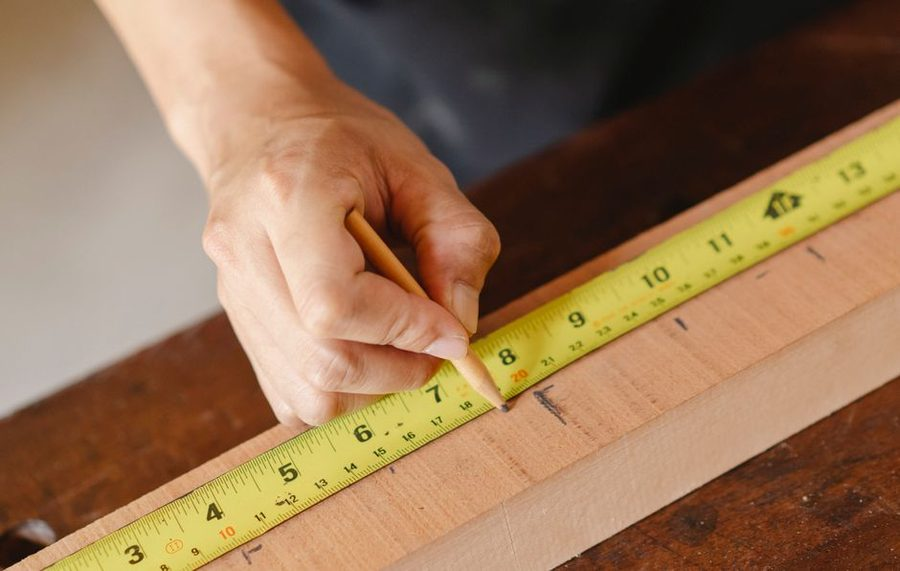

Rev. 3 · 04 mar · leitura de 5 minutos
O erro de dois milimetros que arruina a peca inteira
Erro pequeno nao fica pequeno: ele se soma a cada repeticao e aparece inteiro na ultima peca da sequencia.

Quem corta quatro pecas iguais e ve a ultima sobrar dois centimetros costuma culpar a serra. Na maioria das vezes a serra esta certa e o problema esta antes: cada peca foi medida a partir da anterior, e nao a partir de uma referencia unica. Um erro de dois milimetros por peca vira oito milimetros na quarta e um centimetro na quinta.
Meca sempre da mesma referencia
A correcao e simples e contraria ao instinto. Em vez de cortar uma peca e usa-la para marcar a proxima, marque todas as cotas na mesma tabua, a partir da mesma extremidade, antes de qualquer corte. O erro deixa de se acumular porque nenhuma medida depende da anterior.
Quando as pecas precisam ser identicas, o melhor caminho e outro: corte uma peca com cuidado, confira, e use-a como gabarito fisico para as demais, sempre encostando na mesma face. Gabarito nao mede, compara, e comparacao nao acumula erro de leitura.
A espessura do risco tambem e medida
Um lapis de carpinteiro comum deixa um traco de quase dois milimetros. Se voce corta ora no meio, ora na borda do traco, ja produziu variacao suficiente para a peca nao encaixar. Escolha um lado do traco e mantenha o mesmo criterio em todos os cortes.
Para trabalho que exige precisao maior, o riscador metalico resolve: ele deixa um sulco fino, visivel e sem espessura relevante. Em madeira, o sulco tambem guia o dente da serra no inicio do corte, o que reduz lascamento na borda.
Perda de corte: o que quase ninguem desconta
Toda lamina tira material. Uma serra circular comum consome entre 2 e 3 mm por corte; uma serrote, um pouco menos; uma serra de fita, menos ainda. Se voce dividiu uma tabua de 2 metros em quatro pedacos de 50 cm no papel, na pratica vai faltar quase um centimetro.
A conta correta soma a espessura da lamina multiplicada pelo numero de cortes. Em uma tabua com quatro cortes e lamina de 2,5 mm, sao 10 mm que precisam sair de algum lugar, e e melhor decidir de onde antes do que descobrir no fim.
Conferencia antes do corte
Duas conferencias resolvem quase tudo. A primeira e reler a cota na trena com a peca ja marcada, olhando de frente e nao de lado (olhar de angulo desloca a leitura em ate um milimetro). A segunda e conferir se a marcacao esta na face certa da peca, porque marcar na face errada e o erro mais comum de todos.
Um habito util e escrever a cota ao lado do risco, com lapis, na propria peca. Quando o corte for feito meia hora depois, ninguem precisa lembrar se aquele risco era o de 48 ou o de 43 centimetros.
Quando dois milimetros nao importam
Nem todo trabalho exige precisao. Uma prateleira de garagem tolera folga; uma porta de armario, nao. Antes de comecar, decida a tolerancia da peca e trabalhe com ela declarada. Perseguir precisao de marcenaria fina em um caixote de ferramenta so gasta tempo e material.
Este texto e revisado quando a pratica mostra que a recomendacao nao se sustenta. A revisao vigente esta indicada no topo da folha.